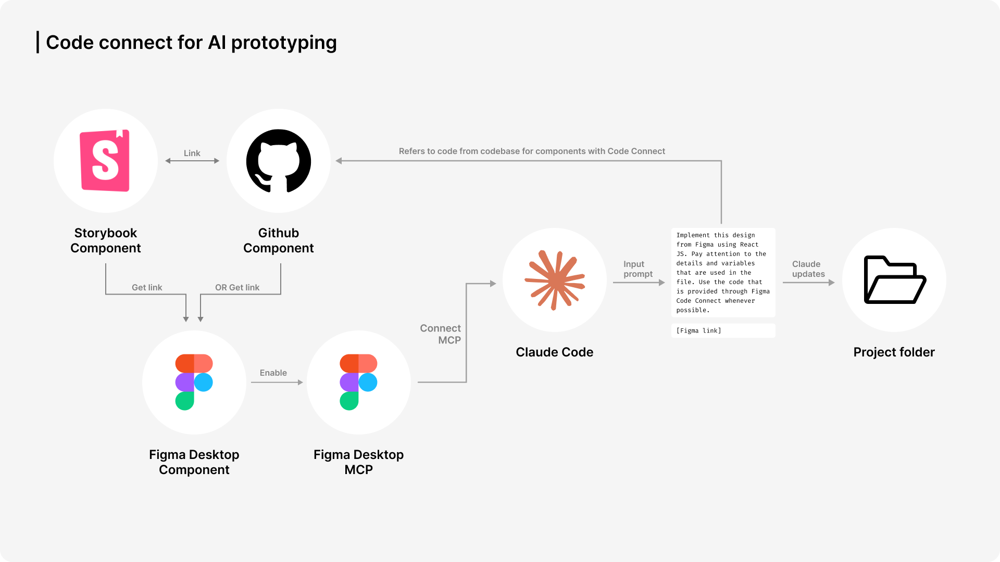
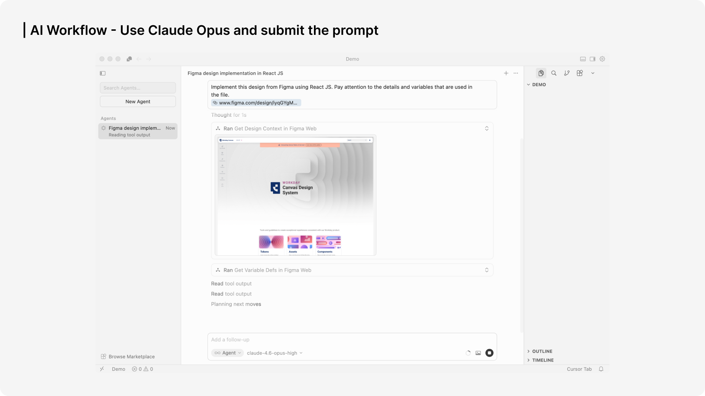

AI Prototyping Task Force
Building a code-connected prototyping system for enterprise AI products

A standardized pipeline connected design files, AI code generation, reusable components, and iteration.
AI Prototyping Task Force turned AI prototyping from an ad hoc activity into a reusable system for the product organization.
The platform connected Figma, code generation, reusable components, and GitHub so teams could test real AI behavior instead of static mockups.
The result was organizational leverage: faster iteration, cleaner handoff, and one shared standard for prototyping AI products.
Scope
Platform design across workflow, component system, and enablement
Team
Head of Design, 4 designers, engineering, PMs, and external tooling partners
Timeline
3 months from setup to org-wide adoption
Outcome
A standardized AI prototyping system used across teams and products
Problem
Design teams could not prototype real AI behavior with enough fidelity to validate product decisions before engineering handoff.
1
Static bottleneck
Figma-only prototypes could not represent streaming, feedback, or non-deterministic AI states.
2
Handoff inefficiency
Design-to-dev translation was slow because prototypes were disconnected from production code.
3
Tool fragmentation
Teams were experimenting with different methods, which made reuse and adoption difficult.
Pain Point
AI prototyping was possible, but not systematized
Without a shared pipeline, designers could not reliably test real AI behavior or hand work to engineering in a reusable form.
Key Design Decisions
- Problem: static mockups could not simulate real AI behavior or support reliable handoff.
- Options: stay in Figma, build custom prototypes manually, or connect design directly to code.
- Final decision: a code-connected workflow using structured Figma files, AI code generation, and reusable components.
- Why: prototypes became more realistic, more testable, and closer to implementation.
- Problem: teams were experimenting in parallel with no shared way to prototype AI products.
- Options: allow local workflows, centralize only training, or standardize the end-to-end system.
- Final decision: one shared pipeline with templates, component rules, and enablement for adoption.
- Why: improved reusability, reduced onboarding friction, and made the system scalable across teams.
System Deep Dive
System Deep Dive
The system turned design intent into reusable code artifacts
This made AI prototyping useful not just for exploration, but for validation, iteration, and implementation readiness.
The pipeline connected design input, AI transformation, and reusable code output.
How the System Works
Selected Screens
Solution 1
The workflow pipeline connected design files to working prototypes
The system replaced one-off prototyping methods with a repeatable path from design to code.
The workflow bridged Figma, AI code generation, and reusable output.
Solution 2
Code Connect kept prototypes tied to reusable product components
Designs were not just converted into code; they were connected to the system the product team already used.

Code Connect linked design files to reusable component logic.
Solution 3
Enablement made the system usable beyond the core task force
Workshops, demos, and shared environments helped turn the platform into an organizational standard.

Enablement converted the platform from a specialist tool into a shared team capability.
Impact
100+
designers reached through official workshop enablement
Org adoption
The system spread through formal onboarding and team-wide education rather than one-off advocacy.
$25k
tool partnership secured for broader prototyping access
Tooling leverage
The platform created enough organizational value to justify deeper investment in advanced prototyping tools.
1
shared standard for AI prototyping across teams
Product impact
The system supported higher-fidelity iteration for products like Contract Negotiation Agent and reduced waste before engineering handoff.